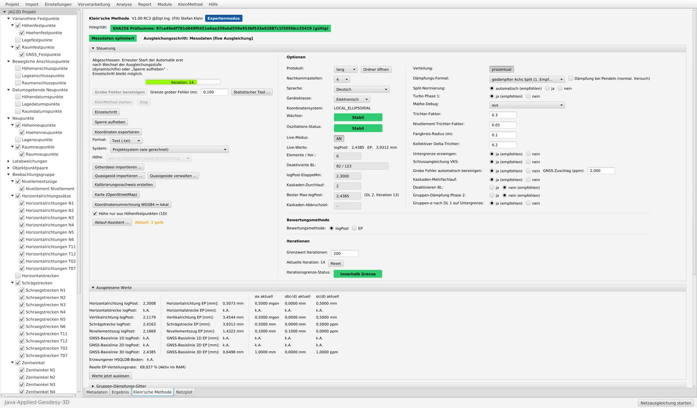

Geodätische Netzausgleichung · Open Source
Klein'sche Methode für JAG3D
Automatische, nachvollziehbare Kalibrierung des stochastischen Modells in der geodätischen Netzausgleichung – als kostenlose Erweiterung der Ausgleichungssoftware JAG3D (Java·Applied·Geodesy·3D).


Worum geht es?
In jeder Netzausgleichung entscheidet das stochastische Modell – die angesetzten Genauigkeiten der Beobachtungen und Anschlusspunkte – darüber, wie Messungen gewichtet, grobe Fehler aufgedeckt und die Genauigkeiten der Ergebnisse angegeben werden. In der Praxis wird es meist von Hand und schrittweise angepasst: Varianzkomponenten schätzen, auffällige Beobachtungen prüfen, Anschlusspunkte bewerten, neu rechnen. Das kostet Zeit und hängt stark von der Erfahrung des Bearbeiters ab.
Die Klein'sche Methode führt diesen Weg in drei Stufen geführt und protokolliert durch:
Freie Ausgleichung
Kalibrierung der Messungen: Gruppengenauigkeiten werden iterativ und gedämpft per Varianzkomponentenschätzung nachgeführt, danach werden einzelne Beobachtungen abgewichtet, bis jede ihren Test besteht (|logPost| ≤ 2,45).
Dynamische Ausgleichung
Analyse der Anschlusspunkte: Sie werden stochastisch eingeführt und kalibriert. Nicht prüfbare Punkte werden ausdrücklich so ausgewiesen.
Fixe Ausgleichung
Abschließende Kalibrierung der Messungen mit den geprüften Anschlusspunkten.
Die Erweiterung nutzt ausschließlich die Rechen- und Testverfahren von JAG3D; der Ausgleichungskern bleibt unverändert.
Einordnung: Das Abwichten einzelner Beobachtungen ist im Kern eine robuste Schätzung und kommt einer impliziten Änderung der Messwerte gleich. Die Methode begrenzt diese Änderung je Beobachtung, meldet grobe Fehler mit ihrer Größe und legt jeden Schritt im Protokoll offen. Sie ersetzt keine fachliche Netzanalyse, sondern nimmt die Routinearbeit ab und benennt Auffälligkeiten, damit der Bearbeiter entscheiden kann.
Funktionen
- Dreistufige Kalibrierung (frei → dynamisch → fix) mit Abbruchkriterium und Schutz gegen Schwingen
- Erkennung grober Fehler mit Angabe der Beobachtung und der Fehlergröße
- GNSS-Massendaten: Epochen-Basislinien werden je Punktpaar robust zusammengefasst – erprobt mit über 300 000 Basislinien
- Wiederholte Messungen je Messart zusammenfassen, regewichten oder kalibrieren
- Plausibilitätsprüfungen beim Import: Näherungskoordinaten, Projektion, Höhensysteme
- Koordinatenumrechnung WGS84 ↔ lokales System
- Gitterdateien (z. B. GCG2016) für ellipsoidische Höhen und Normalhöhen
- Koordinatenexport, z. B. ETRS89/UTM, Gauß-Krüger oder eigene Systeme mit NTv2
- Netzplot auf OpenStreetMap-Hintergrund mit Konfidenzellipsen
- Protokoll jedes Schritts, Kalibrierungsnachweis, Importbericht
- Oberfläche und Hilfe in 7 Sprachen: Deutsch, Englisch, Französisch, Spanisch, Portugiesisch, Polnisch, Tschechisch
- Optional: anonymer Austausch von Erfahrungswerten (ohne Koordinaten, Punkt- oder Projektnamen)
Erprobung
Getestet an synthetischen Netzen mit bekannter Wahrheit (Nivellement, 2D, 3D-Tachymeter, GNSS, kombinierte Netze, Netze mit groben Fehlern und Massendaten) sowie an elf realen Projekten aus der Praxis mit bis zu 487 Neupunkten und über 300 000 GNSS-Basislinien. Alle erreichten in der fixen Stufe das Abbruchkriterium; die Ergebnisse stimmen mit der Bearbeitung von Hand auf wenige Millimeter überein.
Rückmeldungen mit eigenen Netzen – gern mit unabhängigen Kontrollmessungen – sind ausdrücklich erwünscht.
Download und Installation
| System | Paket | Start |
|---|---|---|
| Windows | Java ist enthalten, keine Installation nötig | entpacken, jag3d.exe |
| Linux | Java 25 oder neuer erforderlich | entpacken, ./jag3d.sh |
| macOS | Java 25 oder neuer erforderlich | entpacken, jag3d.command |
Lizenz und Herkunft
Die Klein'sche Methode ist freie Software unter der GNU General Public License v3, © Dipl.-Ing. (FH) Stefan Klein. Sie ist eine inoffizielle Erweiterung von JAG3D (© Michael Lösler, GPL v3) und wird vom Autor von JAG3D weder entwickelt noch unterstützt. Fragen zur Erweiterung bitte über GitHub, nicht im JAG3D-Forum.
English summary
Klein'sche Methode (Klein method) is a free, open-source extension of the least-squares adjustment software JAG3D. It calibrates the stochastic model of geodetic network adjustments automatically and traceably in three stages – free, dynamic (analysis of connection points) and fixed: iterative variance component estimation with lower bounds, followed by robust down-weighting of individual observations until every observation passes its test (|logPost| ≤ 2.45).
It also condenses GNSS mass baselines (tested with more than 300,000 baselines), checks imports, handles height grids and NTv2 grids, exports coordinates in many systems and plots the network on OpenStreetMap. User interface and help are available in seven languages.